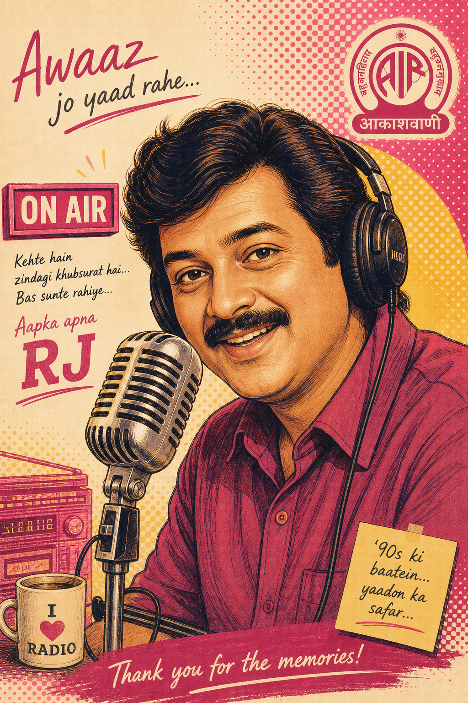
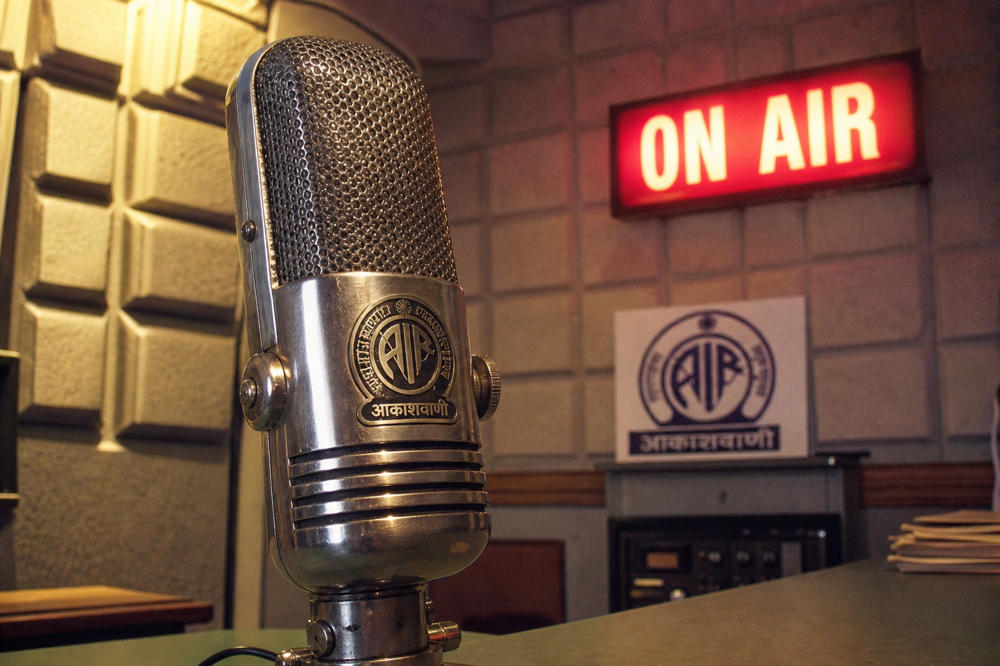

धुंध में स्टेशन
प्रसारण: 14-08-1995 | अवधि: 28 मिनट
एक छोटे स्टेशन पर रुकी ट्रेन और अजनबी मुसाफिर की रहस्यमय कहानी। कलाकार: शारदा, विनोद, कुसुम।


लकड़ी की कुर्सी, लाल बल्ब, और कलाकारों की सांस तक सुनाई देने वाली रातें। यहां उन्हीं नाटकों का छोटा अभिलेख है।
प्रसारण: 14-08-1995 | अवधि: 28 मिनट
एक छोटे स्टेशन पर रुकी ट्रेन और अजनबी मुसाफिर की रहस्यमय कहानी। कलाकार: शारदा, विनोद, कुसुम।
प्रसारण: 03-11-1996 | अवधि: 31 मिनट
पुरानी हवेली में लौटे परिवार को हर रात वही पायल सुनाई देती है। कलाकार: राघव, मीरा, अनवर।